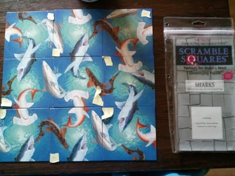

A simple ocaml program that solves the scramble squares puzzle. The program constructs the state space and tries all the possible solutions.
For the case I tried, the only solution was found after having explored 3% of the state space. The compiled version required approximately 15 mins for this.

My instagram profile where I post some of my photos and videos.
A dive at the WWI Italian bomber wreck at 63m at the Flying Fish Reef in Kas, Turkey (2014). The wreck appears 25 seconds into the video.
A dive at the Camel Reef in Kas, Turkey (2016). We are getting close with a grouper during a dive in Kas with Anıl Avcı. The highlight is at 30 seconds; video is shot at about 35m.
Another dive at the Flying Fish Reef in Kas, Turkey (2013). The video is by Serdar Leblebicioglu. You can see the schooling groupers at 10 minutes 30 seconds into the video.